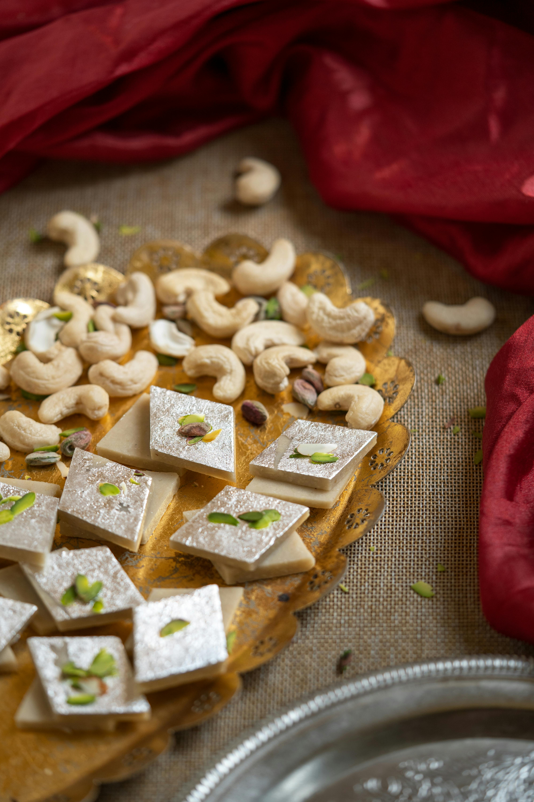
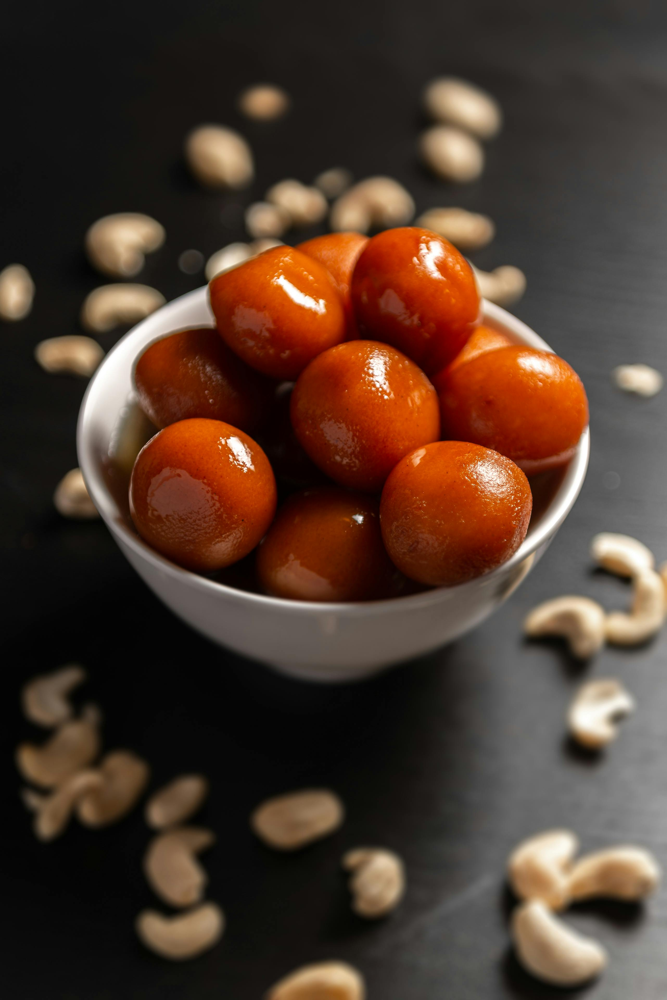

Welcome to Recipe Daaba
Discover a world of culinary delights with our extensive collection of recipes. From traditional dishes to modern cuisine, we have something for everyone.

Delicious Pie-Cake
Indulge in our signature pie-cake, a perfect blend of flaky crust and rich filling.
- 1 cup all-purpose flour
- 1/2 cup unsalted butter (softened)
- 1/2 cup granulated sugar
- 2 large eggs
- 1/2 cup milk
- 1 teaspoon vanilla extract
- 1 teaspoon baking powder
- 1/4 teaspoon salt
- 1 cup pie filling (apple, cherry, or your choice)
- Optional: powdered sugar

Delicious Kaju Kathli
Experience the rich taste of our Kaju Kathli, made with premium cashews and infused with aromatic spices.
- 1 cup cashew nuts (kaju)
- 1/2 cup sugar
- 1/4 cup water
- 1/2 teaspoon cardamom powder (optional)
- 1 teaspoon ghee (for greasing)
- Silver vark (optional for decoration)

Delicious Gulab Jamun
Savor the sweetness of our Gulab Jamun, soft and syrupy, made with the finest ingredients.
- 1 cup khoya (mawa)
- 2 tablespoons all-purpose flour (maida)
- 1/4 teaspoon baking soda
- 2 tablespoons milk (as needed for dough)
- Oil or ghee (for deep frying)
- 1 cup sugar
- 3/4 cup water
- 4 cardamom pods (crushed)
- Few drops of rose water or saffron strands (optional)
